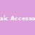

Test Auréthica – Mapa de Estilo Personal
¿Te gusta que tu ropa llame la atención? ¿La usas como forma de expresión?
Sí, la ropa es una forma de expresión
No, prefiero básicos
¿Qué lugar ocupan los complementos en tu día a día?
Complementos obligatorios, siempre elevan el look

Complementos importantes, en su medida
Complementos básicos, siempre los mismos
¿Qué lugar ocupan los complementos en tu día a día?
Clásica: Pendientes obligatorios, los combino según la ocasión
Lo mínimo: casi nada, solo lo que llevo para dormir
¡Gracias por completar el test!
Has elegido: